Veil material page review Production mesh and Slide overlay, rendered with native Skia and deterministic shaped text fixtures. These assets demonstrate geometry and shading; they do not establish phone frame pacing or actuator feel. The earlier strip engine and legacy Paper remain available for comparison.
Architecture and rollout · Device review checklist · Verification results
Material completion and cancellation glossy-cancel glossy-complete matte-cancel matte-complete papyrus-cancel papyrus-complete parchment-cancel parchment-complete Quiet sound cues Generated by the production acoustic policy at the app's default 0.18 volume. No autoplay.
glossy-cancel glossy-complete matte-cancel matte-complete papyrus-cancel papyrus-complete parchment-cancel parchment-complete Paper and Slide frame matrix 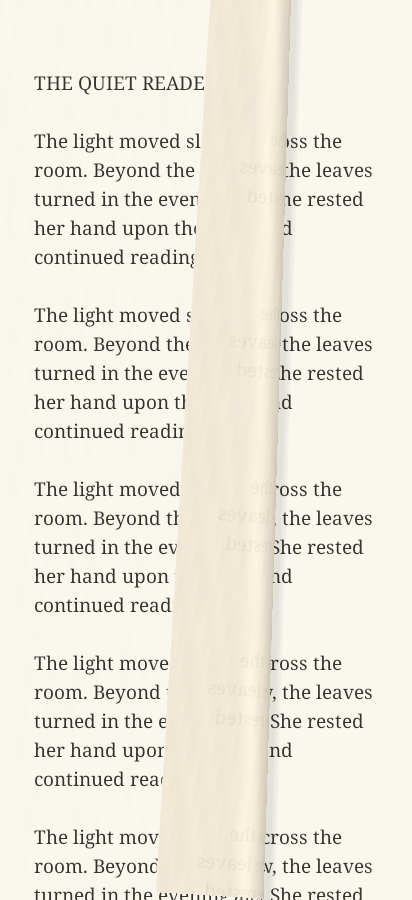
paper-aged 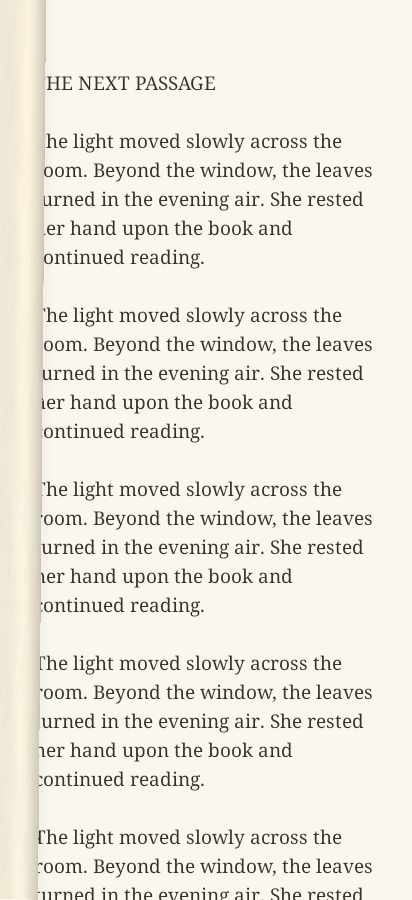
paper-almost-complete 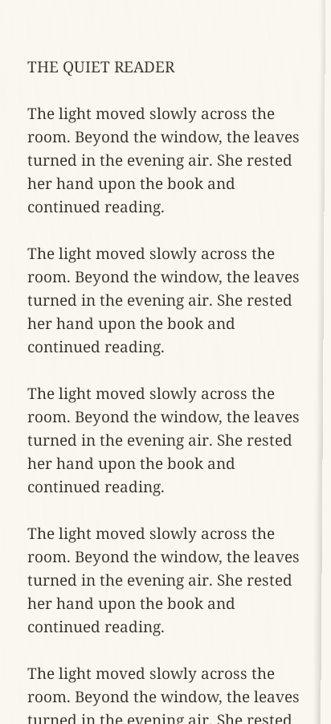
paper-cancel-release 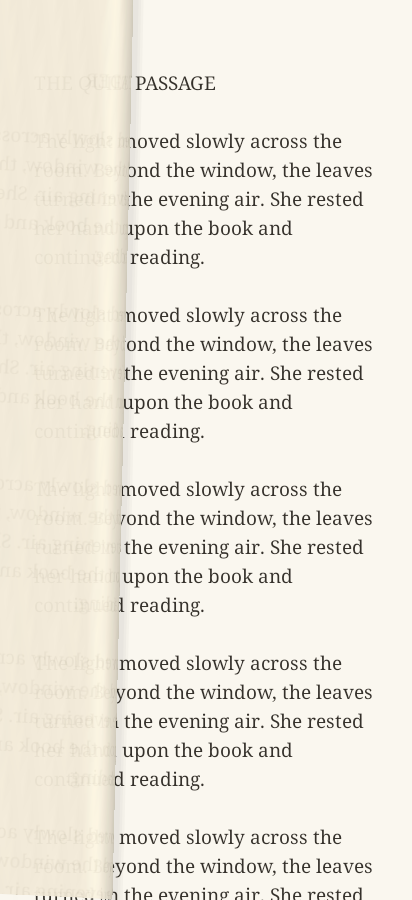
paper-complete-release paper-corner-lift 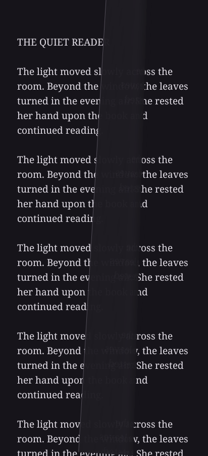
paper-dark 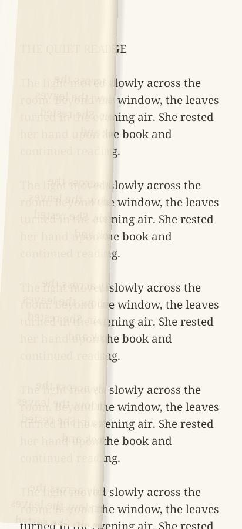
paper-deep-curl 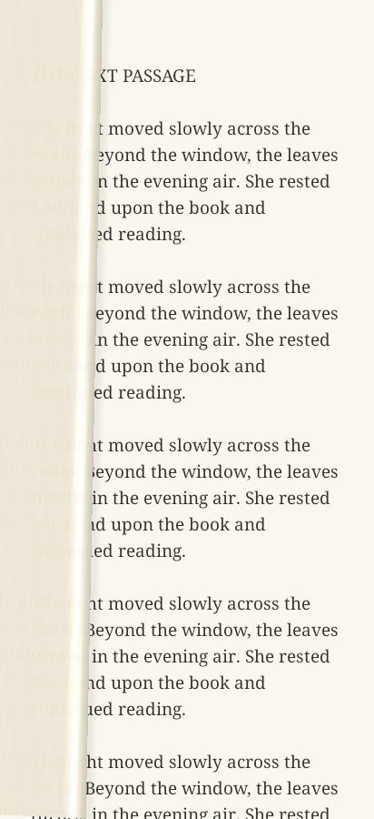
paper-fast-flick 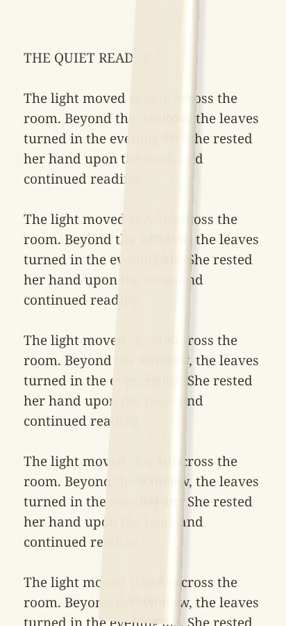
paper-glossy paper-idle paper-ltr 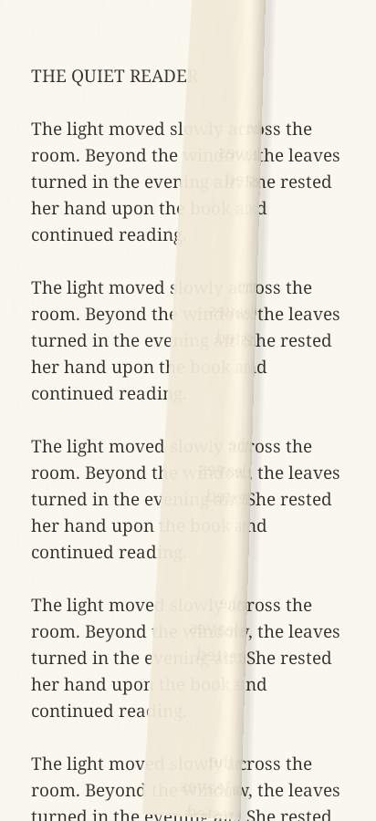
paper-matte 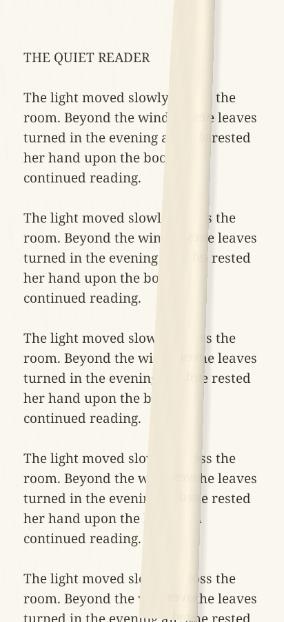
paper-medium-drag 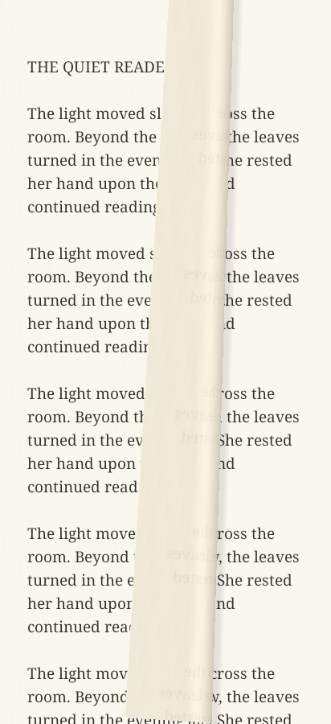
paper-new 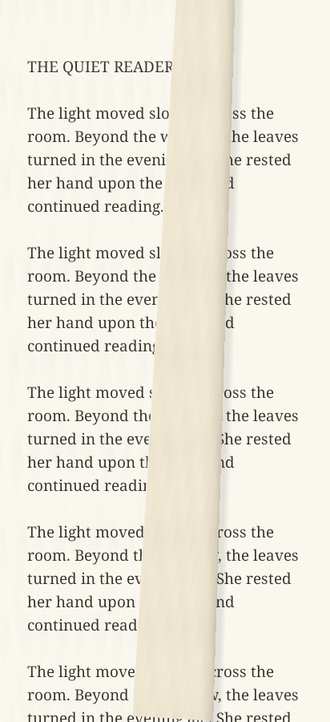
paper-papyrus 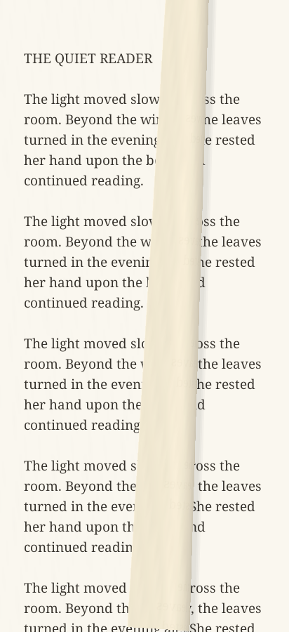
paper-parchment 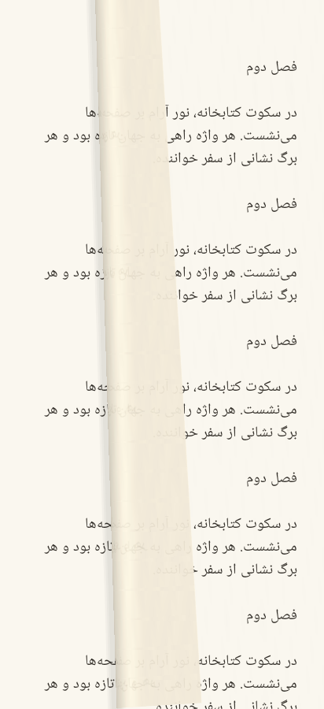
paper-persian paper-reduced-motion 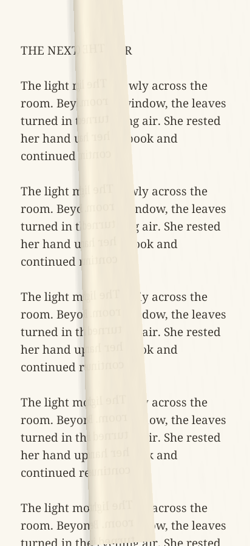
paper-rtl 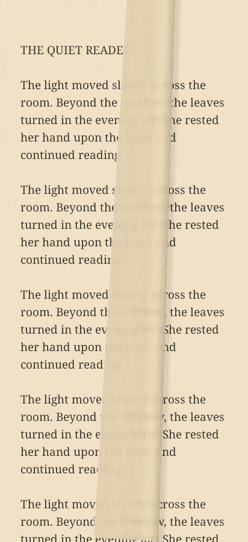
paper-sepia 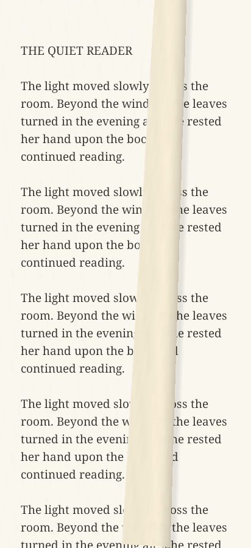
paper-slow-heavy-drag 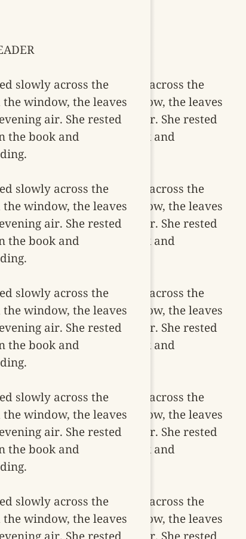
slide-active-transition 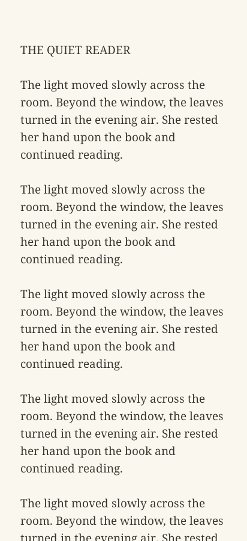
slide-completed-transition slide-idle 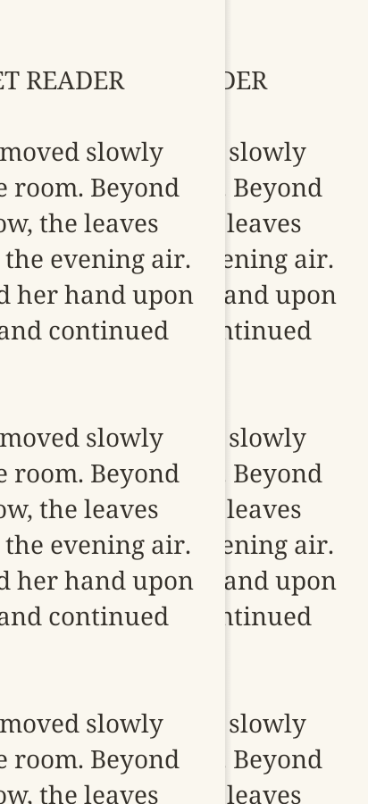
slide-large-text 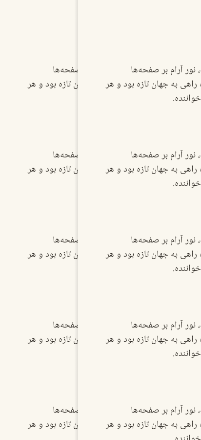
slide-persian 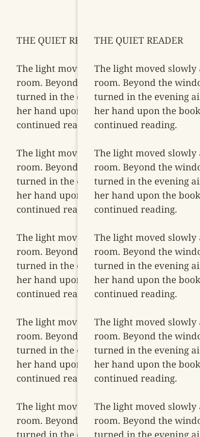
slide-rtl